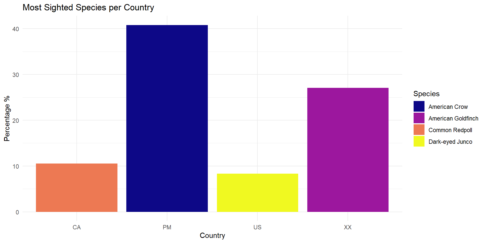
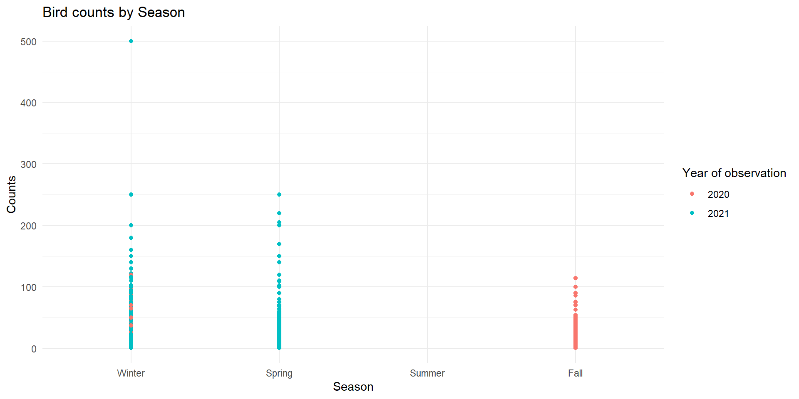
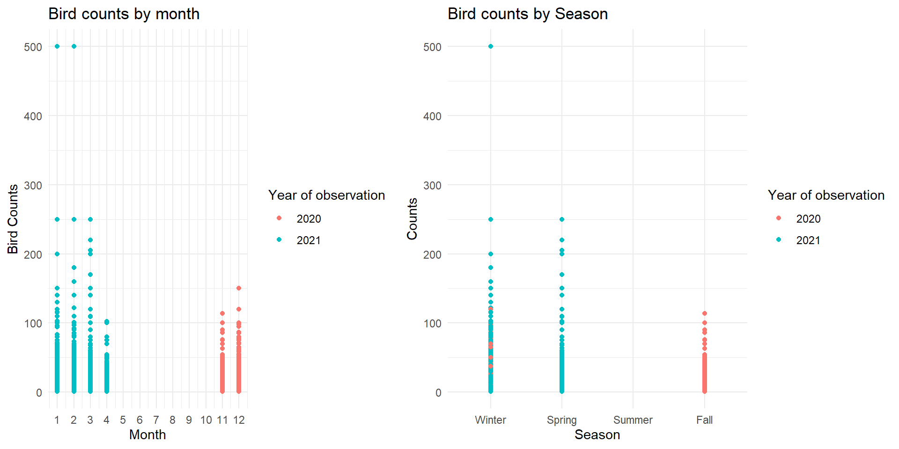
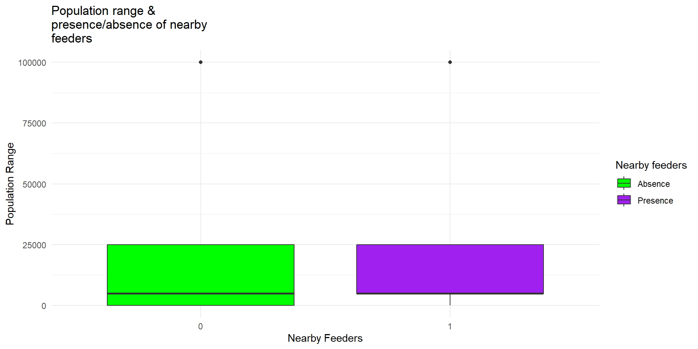
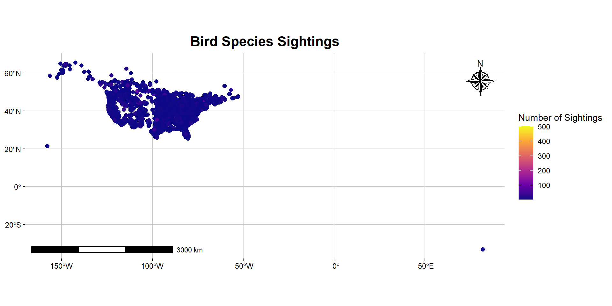
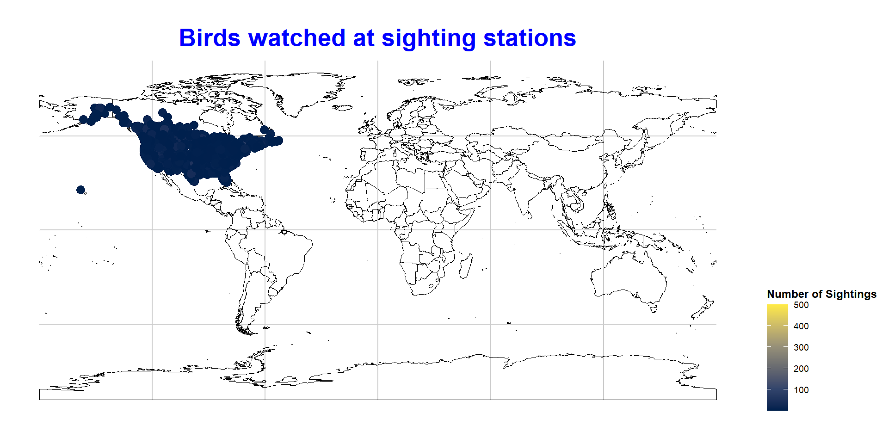
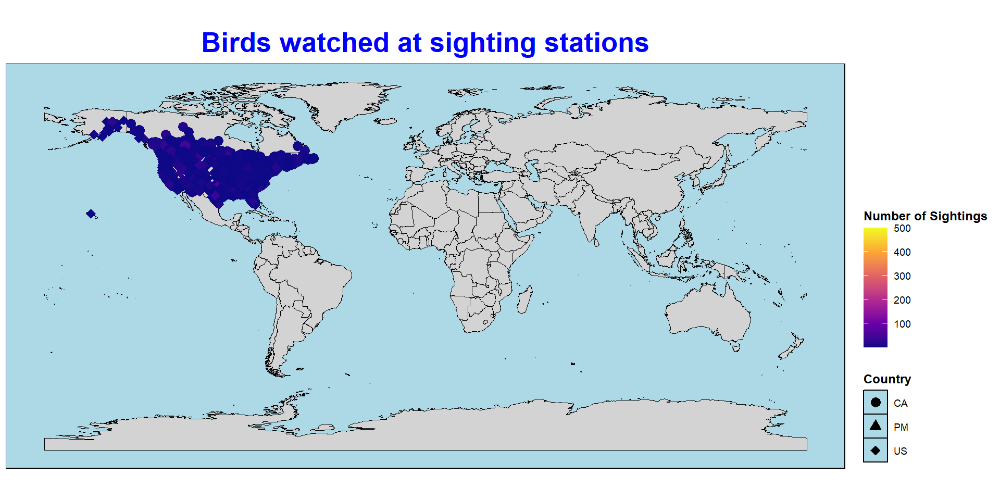

[1] 2Quarto enables you to weave together content and executable code into a finished document. To learn more about Quarto see https://quarto.org.
Data Sets: PFW_count_site_data_public_2021 (Site description data) and PFW_2021_public (Observation data)
Data Wrangling activities done using Tidyverse packages such as Dplyr and tidyr
[1] 2'data.frame': 100000 obs. of 22 variables:
$ loc_id : chr "L981010" "L3161698" "L13210778" "L13258348" ...
$ latitude : num 52.1 43.8 39.7 42.2 32.7 ...
$ longitude : num -122.1 -123.1 -75.9 -83.7 -79.9 ...
$ subnational1_code : chr "CA-BC" "US-OR" "US-MD" "US-MI" ...
$ entry_technique : chr "POSTCODE LAT/LONG LOOKUP" "/GOOGLE_MAP/ZOOM:18" "/GOOGLE_MAP/ZOOM:15" "/GOOGLE_MAP/ZOOM:15" ...
$ sub_id : chr "S83206450" "S78031190" "S81318993" "S79251313" ...
$ obs_id : chr "OBS1092604618" "OBS1036509564" "OBS1073386105" "OBS1051702542" ...
$ Month : int 3 12 2 1 1 3 1 4 11 1 ...
$ Day : int 4 19 13 13 11 13 23 23 28 2 ...
$ Year : int 2021 2020 2021 2021 2021 2021 2021 2021 2020 2021 ...
$ PROJ_PERIOD_ID : chr "PFW_2021" "PFW_2021" "PFW_2021" "PFW_2021" ...
$ species_code : chr "amegfi" "moudov" "tuftit" "houspa" ...
$ how_many : int 20 11 2 2 10 2 5 2 6 9 ...
$ valid : int 1 1 1 1 1 1 1 0 1 1 ...
$ reviewed : int 0 0 0 0 0 0 0 0 0 0 ...
$ day1_am : int 1 1 1 1 1 1 1 1 1 1 ...
$ day1_pm : int 0 1 1 1 1 1 1 1 1 1 ...
$ day2_am : int 1 1 1 1 1 1 1 1 1 1 ...
$ day2_pm : int 0 1 1 1 1 1 1 1 1 1 ...
$ effort_hrs_atleast: num 1 1 8 4 1 ...
$ snow_dep_atleast : num 5 0 5 0 0 ...
$ Data_Entry_Method : chr "PFW Web 4.1.4" "PFW Web 4.1.4" "PFW Web 4.1.4" "PFW Web 4.1.4" ...'data.frame': 254355 obs. of 62 variables:
$ loc_id : chr "L100016" "L100016" "L100016" "L100016" ...
$ proj_period_id : chr "PFW_2002" "PFW_2003" "PFW_2004" "PFW_2005" ...
$ yard_type_pavement : int 0 0 0 0 0 0 0 0 0 0 ...
$ yard_type_garden : int 0 0 0 0 0 0 0 0 0 0 ...
$ yard_type_landsca : int 1 1 1 1 1 1 0 0 0 0 ...
$ yard_type_woods : int 0 0 0 0 0 0 1 1 1 1 ...
$ yard_type_desert : int 0 0 0 0 0 0 0 0 0 0 ...
$ hab_dcid_woods : int 1 1 1 1 1 1 1 1 1 1 ...
$ hab_evgr_woods : int NA NA NA NA 0 0 NA NA NA NA ...
$ hab_mixed_woods : int 1 1 1 1 1 1 NA NA NA NA ...
$ hab_orchard : int NA NA NA NA 0 0 NA NA NA NA ...
$ hab_park : int NA NA NA NA 0 0 NA NA NA NA ...
$ hab_water_fresh : int 1 1 1 1 1 1 1 1 1 1 ...
$ hab_water_salt : int NA NA NA NA 0 0 NA NA NA NA ...
$ hab_residential : int 1 1 1 1 1 1 NA NA NA NA ...
$ hab_industrial : int NA NA NA NA 0 0 NA NA NA NA ...
$ hab_agricultural : int 1 1 1 1 1 1 NA NA NA NA ...
$ hab_desert_scrub : int NA NA NA NA 0 0 NA NA NA NA ...
$ hab_young_woods : int NA NA NA NA 0 0 NA NA NA NA ...
$ hab_swamp : int NA NA NA NA 0 0 NA NA NA NA ...
$ hab_marsh : int 1 1 1 1 1 1 NA NA NA NA ...
$ evgr_trees_atleast : int 11 11 11 11 11 11 0 0 0 4 ...
$ evgr_shrbs_atleast : int 4 4 4 4 1 1 1 1 1 1 ...
$ dcid_trees_atleast : int 11 11 11 11 1 1 11 11 11 11 ...
$ dcid_shrbs_atleast : int 4 4 4 4 4 4 11 11 11 11 ...
$ fru_trees_atleast : int 4 4 4 4 1 1 1 1 1 1 ...
$ cacti_atleast : int 0 0 0 0 0 0 0 0 0 0 ...
$ brsh_piles_atleast : int 0 0 0 0 0 0 1 1 1 1 ...
$ water_srcs_atleast : int 1 1 1 1 1 1 0 0 0 0 ...
$ bird_baths_atleast : int 0 0 0 0 0 0 1 1 1 1 ...
$ nearby_feeders : int 0 1 1 1 0 0 1 0 1 1 ...
$ squirrels : int 0 0 0 0 0 0 1 1 1 1 ...
$ cats : int 0 1 1 1 1 1 1 0 0 0 ...
$ dogs : int 0 0 0 0 0 0 1 0 0 0 ...
$ humans : int 0 0 0 0 0 1 1 1 0 1 ...
$ housing_density : int 2 2 2 2 2 2 1 1 1 1 ...
$ fed_yr_round : int 0 0 0 0 NA NA 1 1 1 1 ...
$ fed_in_jan : int 1 1 1 1 1 1 1 1 1 1 ...
$ fed_in_feb : int 1 1 1 1 1 1 1 1 1 1 ...
$ fed_in_mar : int 1 1 1 1 1 1 1 1 1 1 ...
$ fed_in_apr : int 1 1 1 1 1 0 1 1 1 1 ...
$ fed_in_may : int 0 0 0 0 0 0 1 1 1 1 ...
$ fed_in_jun : int 0 0 0 0 0 0 1 1 1 1 ...
$ fed_in_jul : int 0 0 0 0 0 0 1 1 1 1 ...
$ fed_in_aug : int 0 0 0 0 0 0 1 1 1 1 ...
$ fed_in_sep : int 0 0 0 0 0 0 1 1 1 1 ...
$ fed_in_oct : int 0 0 0 0 0 0 1 1 1 1 ...
$ fed_in_nov : int 1 1 1 1 1 1 1 1 1 1 ...
$ fed_in_dec : int 1 1 1 1 1 1 1 1 1 1 ...
$ numfeeders_suet : int 1 1 1 1 1 1 3 3 3 3 ...
$ numfeeders_ground : int NA 0 0 0 NA NA 1 1 1 1 ...
$ numfeeders_hanging : int 1 1 1 3 NA NA 2 2 2 2 ...
$ numfeeders_platfrm : int 1 1 1 0 NA NA 1 1 1 2 ...
$ numfeeders_humming : int NA 0 0 0 NA NA 1 1 1 1 ...
$ numfeeders_water : int 1 1 1 1 NA NA 2 2 2 2 ...
$ numfeeders_thistle : int NA 0 0 0 NA NA 1 1 1 2 ...
$ numfeeders_fruit : int NA 0 0 0 NA NA 1 1 1 1 ...
$ numfeeders_hopper : int NA NA NA NA 1 1 NA NA NA NA ...
$ numfeeders_tube : int NA NA NA NA 1 1 NA NA NA NA ...
$ numfeeders_other : int NA NA NA NA NA NA NA NA NA NA ...
$ population_atleast : int 1 1 1 1 1 1 1 1 1 1 ...
$ count_area_size_sq_m_atleast: num 1.01 1.01 1.01 1.01 1.01 ...Looks like both are long data sets
Entered by many data sources with varying levels of credibility hence high chances of error or bias
However, the data set has validation data which if done thoroughly has potential to reduce error
Pivot Wider data with selected columns Check vaiables names to select for analysis
[1] "loc_id" "latitude" "longitude"
[4] "subnational1_code" "entry_technique" "sub_id"
[7] "obs_id" "Month" "Day"
[10] "Year" "PROJ_PERIOD_ID" "species_code"
[13] "how_many" "valid" "reviewed"
[16] "day1_am" "day1_pm" "day2_am"
[19] "day2_pm" "effort_hrs_atleast" "snow_dep_atleast"
[22] "Data_Entry_Method" An overview of the created wider data set
# A tibble: 6 × 15,291
obs_id L981010 L3161698 L13210778 L13258348 L149639 L10140349 L74629 L162342
<chr> <int> <int> <int> <int> <int> <int> <int> <int>
1 OBS1092… 20 NA NA NA NA NA NA NA
2 OBS1036… NA 11 NA NA NA NA NA NA
3 OBS1073… NA NA 2 NA NA NA NA NA
4 OBS1051… NA NA NA 2 NA NA NA NA
5 OBS1050… NA NA NA NA 10 NA NA NA
6 OBS1095… NA NA NA NA NA 2 NA NA
# ℹ 15,282 more variables: L189158 <int>, L19251 <int>, L28977 <int>,
# L12797578 <int>, L12711146 <int>, L162530 <int>, L272593 <int>,
# L10162485 <int>, L10227242 <int>, L1319717 <int>, L1793922 <int>,
# L12730203 <int>, L12755092 <int>, L5147006 <int>, L12740683 <int>,
# L10768239 <int>, L8193205 <int>, L78156 <int>, L8927802 <int>,
# L13831719 <int>, L12815327 <int>, L77181 <int>, L281817 <int>,
# L12629725 <int>, L664025 <int>, L2409840 <int>, L13477384 <int>, …Not very useful- a lot of empty cells!
Combined subnational codes of Subset_1 by prefixes
Rename some variables
Data set too big for distinct figures- Filter for analysis (Subset_2)
Filter out the N/A from the country data
Then aggregate the data
Now filter out the highest proportion- top species per country + rename the species
Now plot the graph with colorblind consideration
*Country PM: Palau- Western Pacific Ocean
Plot the new figure

loc_id proj_period_id yard_type_pavement yard_type_garden
Length:224869 Length:224869 Min. :0 Min. :0.00
Class :character Class :character 1st Qu.:0 1st Qu.:0.00
Mode :character Mode :character Median :0 Median :0.00
Mean :0 Mean :0.04
3rd Qu.:0 3rd Qu.:0.00
Max. :1 Max. :1.00
NA's :48324 NA's :48095
yard_type_landsca yard_type_woods yard_type_desert hab_dcid_woods
Min. :0.00 Min. :0.00 Min. :0.00 Min. :0.00
1st Qu.:1.00 1st Qu.:0.00 1st Qu.:0.00 1st Qu.:0.00
Median :1.00 Median :1.00 Median :0.00 Median :0.00
Mean :0.82 Mean :0.61 Mean :0.01 Mean :0.49
3rd Qu.:1.00 3rd Qu.:1.00 3rd Qu.:0.00 3rd Qu.:1.00
Max. :1.00 Max. :1.00 Max. :1.00 Max. :1.00
NA's :46014 NA's :48048 NA's :48303 NA's :32080
hab_evgr_woods hab_mixed_woods hab_orchard hab_park
Min. :0.00 Min. :0.000 Min. :0.00 Min. :0.00
1st Qu.:0.00 1st Qu.:0.000 1st Qu.:0.00 1st Qu.:0.00
Median :0.00 Median :1.000 Median :0.00 Median :0.00
Mean :0.22 Mean :0.648 Mean :0.09 Mean :0.44
3rd Qu.:0.00 3rd Qu.:1.000 3rd Qu.:0.00 3rd Qu.:1.00
Max. :1.00 Max. :1.000 Max. :1.00 Max. :1.00
NA's :40766 NA's :28185 NA's :57772 NA's :96514
hab_water_fresh hab_water_salt hab_residential hab_industrial
Min. :0.0 Min. :0.00 Min. :0.000 Min. :0.00
1st Qu.:0.0 1st Qu.:0.00 1st Qu.:1.000 1st Qu.:0.00
Median :1.0 Median :0.00 Median :1.000 Median :0.00
Mean :0.6 Mean :0.05 Mean :0.868 Mean :0.22
3rd Qu.:1.0 3rd Qu.:0.00 3rd Qu.:1.000 3rd Qu.:0.00
Max. :1.0 Max. :1.00 Max. :1.000 Max. :1.00
NA's :32117 NA's :54458 NA's :24812 NA's :40328
hab_agricultural hab_desert_scrub hab_young_woods hab_swamp
Min. :0.0 Min. :0.00 Min. :0.00 Min. :0.00
1st Qu.:0.0 1st Qu.:0.00 1st Qu.:0.00 1st Qu.:0.00
Median :0.0 Median :0.00 Median :0.00 Median :0.00
Mean :0.4 Mean :0.09 Mean :0.34 Mean :0.28
3rd Qu.:1.0 3rd Qu.:0.00 3rd Qu.:1.00 3rd Qu.:1.00
Max. :1.0 Max. :1.00 Max. :1.00 Max. :1.00
NA's :61402 NA's :54385 NA's :63335 NA's :94232
hab_marsh evgr_trees_atleast evgr_shrbs_atleast dcid_trees_atleast
Min. :0.00 Min. : 0 Min. : 0.000 Min. : 0.000
1st Qu.:0.00 1st Qu.: 1 1st Qu.: 1.000 1st Qu.: 3.000
Median :0.00 Median : 3 Median : 3.000 Median : 4.000
Mean :0.17 Mean : 4 Mean : 3.632 Mean : 5.612
3rd Qu.:0.00 3rd Qu.: 4 3rd Qu.: 4.000 3rd Qu.:11.000
Max. :1.00 Max. :11 Max. :11.000 Max. :11.000
NA's :69250 NA's :18667 NA's :21370 NA's :17372
dcid_shrbs_atleast fru_trees_atleast cacti_atleast brsh_piles_atleast
Min. : 0.000 Min. : 0.00 Min. : 0.0 Min. : 0.00
1st Qu.: 1.000 1st Qu.: 1.00 1st Qu.: 0.0 1st Qu.: 0.00
Median : 4.000 Median : 1.00 Median : 0.0 Median : 1.00
Mean : 4.971 Mean : 2.37 Mean : 0.2 Mean : 1.03
3rd Qu.:11.000 3rd Qu.: 4.00 3rd Qu.: 0.0 3rd Qu.: 1.00
Max. :11.000 Max. :11.00 Max. :11.0 Max. :11.00
NA's :20327 NA's :43356 NA's :38855 NA's :35094
water_srcs_atleast bird_baths_atleast nearby_feeders squirrels
Min. : 0.00 Min. : 0.00 Min. :0.0000 Min. :0.0000
1st Qu.: 0.00 1st Qu.: 0.00 1st Qu.:0.0000 1st Qu.:1.0000
Median : 0.00 Median : 1.00 Median :0.0000 Median :1.0000
Mean : 0.39 Mean : 0.88 Mean :0.4364 Mean :0.7982
3rd Qu.: 1.00 3rd Qu.: 1.00 3rd Qu.:1.0000 3rd Qu.:1.0000
Max. :11.00 Max. :11.00 Max. :1.0000 Max. :1.0000
NA's :50422 NA's :46041 NA's :2538
cats dogs humans housing_density
Min. :0.000 Min. :0.000 Min. :0.000 Min. :1.000
1st Qu.:0.000 1st Qu.:0.000 1st Qu.:1.000 1st Qu.:1.000
Median :1.000 Median :1.000 Median :1.000 Median :2.000
Mean :0.538 Mean :0.532 Mean :0.809 Mean :2.189
3rd Qu.:1.000 3rd Qu.:1.000 3rd Qu.:1.000 3rd Qu.:3.000
Max. :1.000 Max. :1.000 Max. :1.000 Max. :4.000
NA's :14319 NA's :15814 NA's :8813 NA's :15347
fed_yr_round fed_in_jan fed_in_feb fed_in_mar
Min. :0.00 Min. :0.00 Min. :0.00 Min. :0.00
1st Qu.:1.00 1st Qu.:1.00 1st Qu.:1.00 1st Qu.:1.00
Median :1.00 Median :1.00 Median :1.00 Median :1.00
Mean :0.78 Mean :0.93 Mean :0.93 Mean :0.92
3rd Qu.:1.00 3rd Qu.:1.00 3rd Qu.:1.00 3rd Qu.:1.00
Max. :1.00 Max. :1.00 Max. :1.00 Max. :1.00
NA's :144834 NA's :40682 NA's :40757 NA's :40808
fed_in_apr fed_in_may fed_in_jun fed_in_jul
Min. :0.00 Min. :0.00 Min. :0.0 Min. :0.00
1st Qu.:1.00 1st Qu.:1.00 1st Qu.:0.0 1st Qu.:0.00
Median :1.00 Median :1.00 Median :1.0 Median :1.00
Mean :0.89 Mean :0.76 Mean :0.7 Mean :0.67
3rd Qu.:1.00 3rd Qu.:1.00 3rd Qu.:1.0 3rd Qu.:1.00
Max. :1.00 Max. :1.00 Max. :1.0 Max. :1.00
NA's :41511 NA's :43339 NA's :44340 NA's :44711
fed_in_aug fed_in_sep fed_in_oct fed_in_nov
Min. :0.00 Min. :0.00 Min. :0.00 Min. :0.00
1st Qu.:0.00 1st Qu.:0.00 1st Qu.:1.00 1st Qu.:1.00
Median :1.00 Median :1.00 Median :1.00 Median :1.00
Mean :0.67 Mean :0.74 Mean :0.84 Mean :0.93
3rd Qu.:1.00 3rd Qu.:1.00 3rd Qu.:1.00 3rd Qu.:1.00
Max. :1.00 Max. :1.00 Max. :1.00 Max. :1.00
NA's :44632 NA's :43616 NA's :41998 NA's :40313
fed_in_dec numfeeders_suet numfeeders_ground numfeeders_hanging
Min. :0.00 Min. : 0.000 Min. : 0.000 Min. : 0.00
1st Qu.:1.00 1st Qu.: 1.000 1st Qu.: 0.000 1st Qu.: 1.00
Median :1.00 Median : 1.000 Median : 1.000 Median : 2.00
Mean :0.93 Mean : 1.672 Mean : 1.254 Mean : 2.71
3rd Qu.:1.00 3rd Qu.: 2.000 3rd Qu.: 2.000 3rd Qu.: 4.00
Max. :1.00 Max. :14850.000 Max. :76.000 Max. :55.00
NA's :40541 NA's :9523 NA's :26590 NA's :127794
numfeeders_platfrm numfeeders_humming numfeeders_water numfeeders_thistle
Min. : 0.00 Min. : 0.0 Min. : 0.00 Min. : 0.00
1st Qu.: 0.00 1st Qu.: 0.0 1st Qu.: 0.00 1st Qu.: 0.00
Median : 1.00 Median : 0.0 Median : 1.00 Median : 1.00
Mean : 1.02 Mean : 0.5 Mean : 0.79 Mean : 1.01
3rd Qu.: 1.00 3rd Qu.: 1.0 3rd Qu.: 1.00 3rd Qu.: 1.00
Max. :111.00 Max. :40.0 Max. :20.00 Max. :50.00
NA's :29797 NA's :42330 NA's :132607 NA's :157084
numfeeders_fruit numfeeders_hopper numfeeders_tube numfeeders_other
Min. : 0.00 Min. : 0.00 Min. : 0.00 Min. : 0.00
1st Qu.: 0.00 1st Qu.: 0.00 1st Qu.: 1.00 1st Qu.: 0.00
Median : 0.00 Median : 1.00 Median : 2.00 Median : 0.00
Mean : 0.14 Mean : 1.35 Mean : 2.14 Mean : 0.58
3rd Qu.: 0.00 3rd Qu.: 2.00 3rd Qu.: 3.00 3rd Qu.: 1.00
Max. :112.00 Max. :211.00 Max. :104.00 Max. :99.00
NA's :77543 NA's :114942 NA's :105008 NA's :135761
population_atleast count_area_size_sq_m_atleast
Min. : 1 Min. : 0.01
1st Qu.: 1 1st Qu.: 1.01
Median : 5001 Median :100.01
Mean : 25300 Mean :126.02
3rd Qu.: 25001 3rd Qu.:100.01
Max. :100001 Max. :375.01
NA's :19870 NA's :17983 Remove all non finite entries
Wrap the title

rename some columns
Remove missing values of coordinates
Convert to sf object
and add North arrow, scale and grid lines
##Trying alternative packages for additional layering
Load and install Other packages
Remove country XX with location in the sea etc
with color deficiency consideration
and shapes to denote countries
Unknown data set- Had to understand it, learn its genesis, study the meta data before i could clean and synthesize the data The many filters and data groups i created got me a little confused and lost with which data I was supposed to be working with Course facilitators and lecturers helped sort the saving and rendering challenges that plagued my initial work- All is good now
Moved from being an R, Quarto novice to all i know now…learnt so much!! from practically not having an idea what a pipe was to being able to do relatively complex illustrations in R or at least understanding the process to them Also learnt lots of problem solving techniques that i will find extremely useful in future. Also the constant restarts i did due to failure to save initially gave me an opportunity to keep practicing and provided an additional learning platform. I need more practice with QGIS and map generation in general